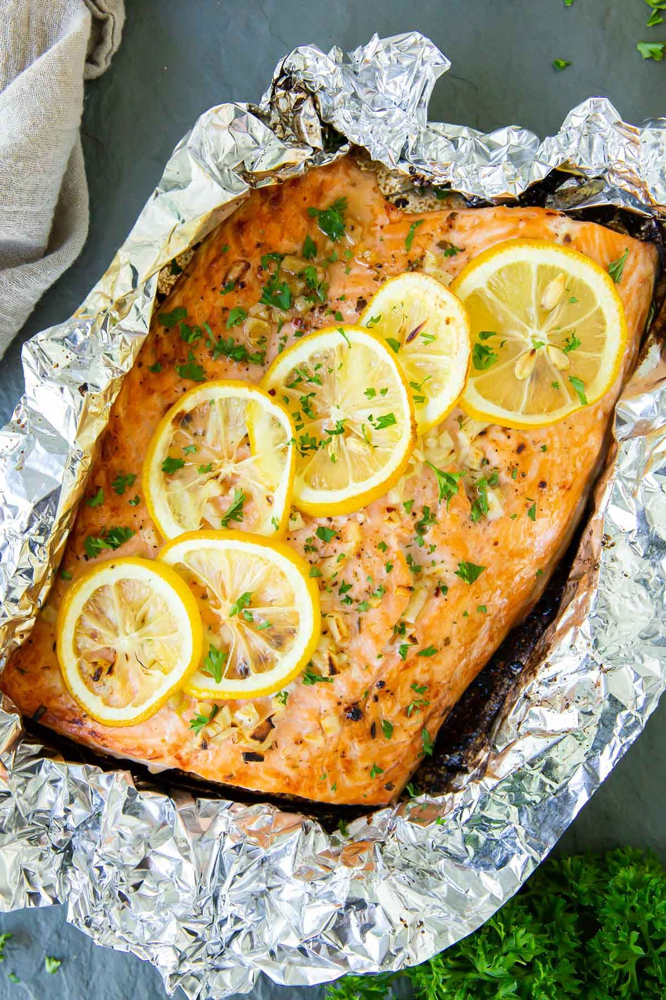

Lemon Garlic Baked Salmon in Foil

- Meal
- Dinner
- Serves
- 6
- Protein
- fish (salmon)
- Cook
- oven · 10 min active / 30 min total · easy
- Make-ahead / leftovers
- no / yes
- Mediterranean
- yes
- WW tier
- light
- Status
- Trying out (probation)
Allergy: Contains fish or shellfish — not for a fish-allergic eater; same-sauce chicken packet is in this card
Kristine's foil-packet salmon: a whole side brushed with lemon-garlic butter, covered in lemon slices, sealed and baked, then opened and broiled for a few minutes. No glaze, no sugar — the plain, bright salmon night the deck didn't have (the three existing salmon cards are honey-garlic, bang bang, and teriyaki).
Ingredients
- 2.25 lb salmon side or fillets, skin on
- Salt and pepper
- 3 Tbsp olive oil or melted unsalted butter (source uses butter — see Notes)
- 3 Tbsp lemon juice
- 3 cloves garlic, minced
- 1 1/2 lemons, sliced
- Chopped parsley, optional
- To serve: brown rice (house rule: always brown) and a green vegetable
Fish-free fallback (same sauce, own packet)
- 2 small chicken breasts (or 1 large, butterflied), from the bag
- 1 Tbsp of the lemon-garlic mixture, set aside before brushing the fish
Method
- Heat oven to 400°F, rack in the upper third. Line a rimmed sheet pan with a sheet of foil big enough to wrap the salmon. Tear a second, smaller sheet for the fish-free chicken.
- Whisk the oil (or butter), lemon juice, and garlic. Spoon 1 Tbsp into a small cup for Fish-free plate first.
- Chicken packet: season the chicken, brush with the fish-free portion, top with 2 lemon slices, seal it in the small foil sheet, and put it on a separate small pan in the oven now — it needs ~10 minutes' head start.
- Pat the salmon dry, set skin-side down on the big foil, season, and brush with the rest of the lemon-garlic mixture. Lay lemon slices on top. Fold the foil up into a sealed packet.
- Bake the salmon 13–15 minutes (about 115°F inside). Open the packet, turn on the broiler (450°F), and broil 3–4 minutes until it reaches 145°F — keep the foil away from the element.
- Check the fish-free chicken is 165°F (~25 minutes total). Rest the salmon 3 minutes, parsley on top, serve.
Notes
- Scaled ×1.5 from Kristine's 1.5 lb salmon / serves 4.
- Butter → olive oil is a house Mediterranean swap; butter is the source's choice and also works.
- Fatty fish ✓. Frozen salmon portions from Sam's or Aldi work — thaw in the fridge.
- Fish-free swap: the fish-free chicken gets its own foil packet and its own pan, and its sauce is set aside before the brush touches the fish.
- Not a clone of Honey Garlic Salmon (honey glaze + sheet-pan veg), Teriyaki Salmon Bowls, or Bang Bang Salmon. No sugar, steamed in foil.
- Mediterranean ✓: olive oil, fish, brown rice + a green vegetable on the plate. light.